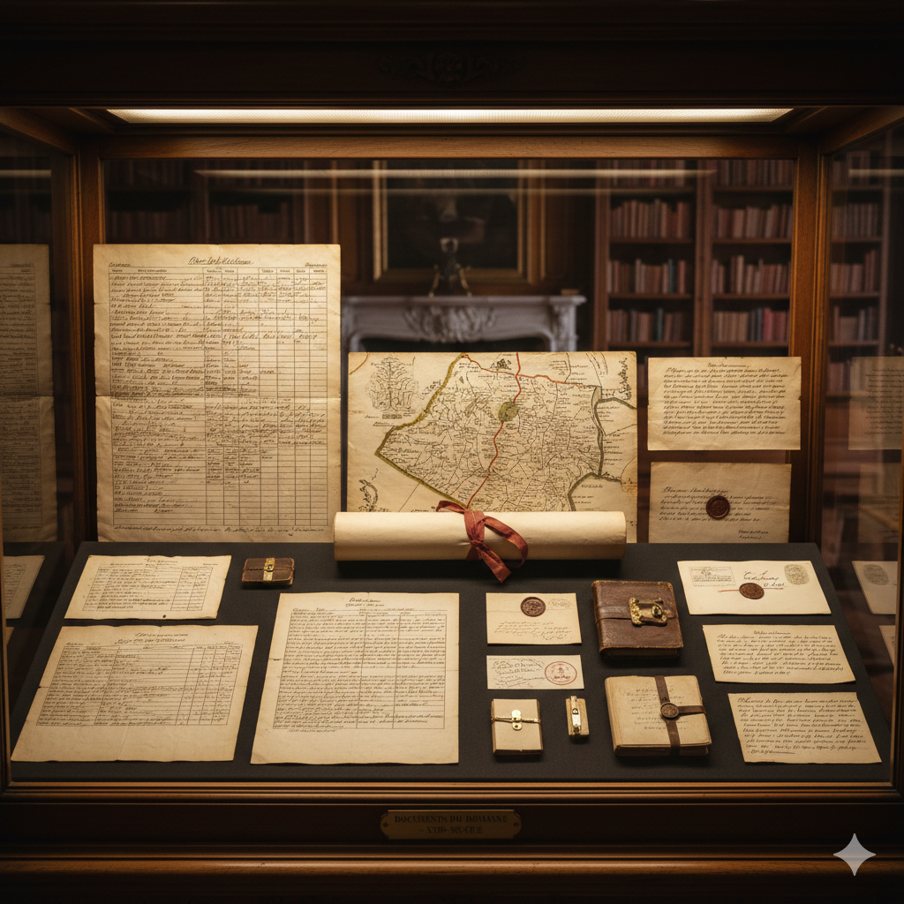
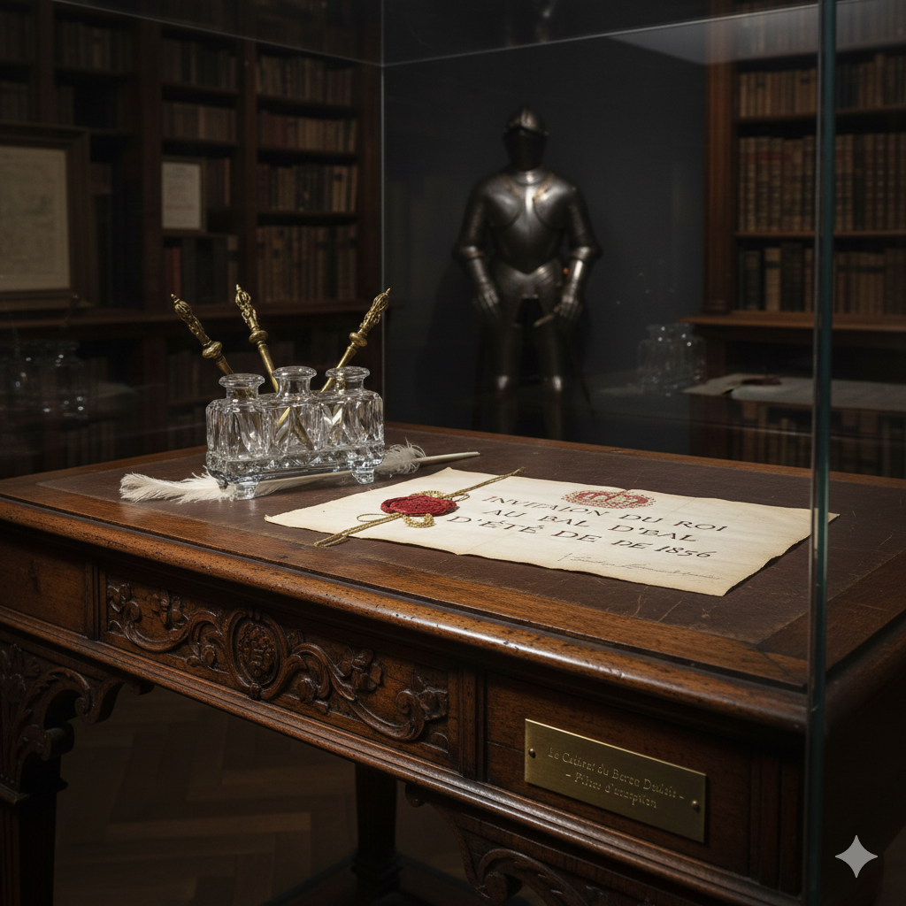

Les Archives de Vie
Découvrez l'acte d'achat original du domaine, ainsi que les actes de naissance et le livret de famille du Baron, témoins de la lignée Dubois.

Splendeur Intérieure
Explorez les pièces de réception où le Baron recevait les notables du Nord, conservées dans leur éclat d'origine.

Manuscrits Précieux
Une collection de documents d'époque révélant la gestion quotidienne du domaine au XVIIIe siècle.

Le Cabinet de Travail
Admirez le bureau authentique du Baron, où reposent encore son encrier et une relique rare : une invitation royale pour le grand bal d'été de 1856.